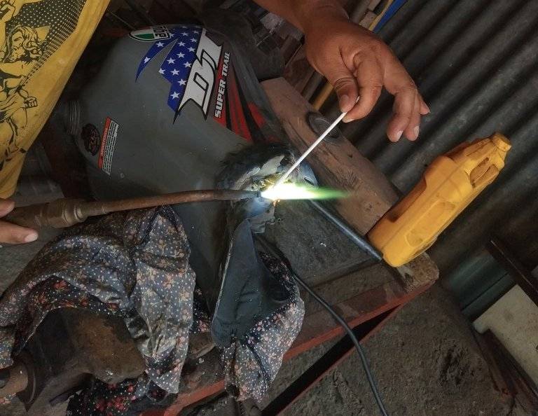
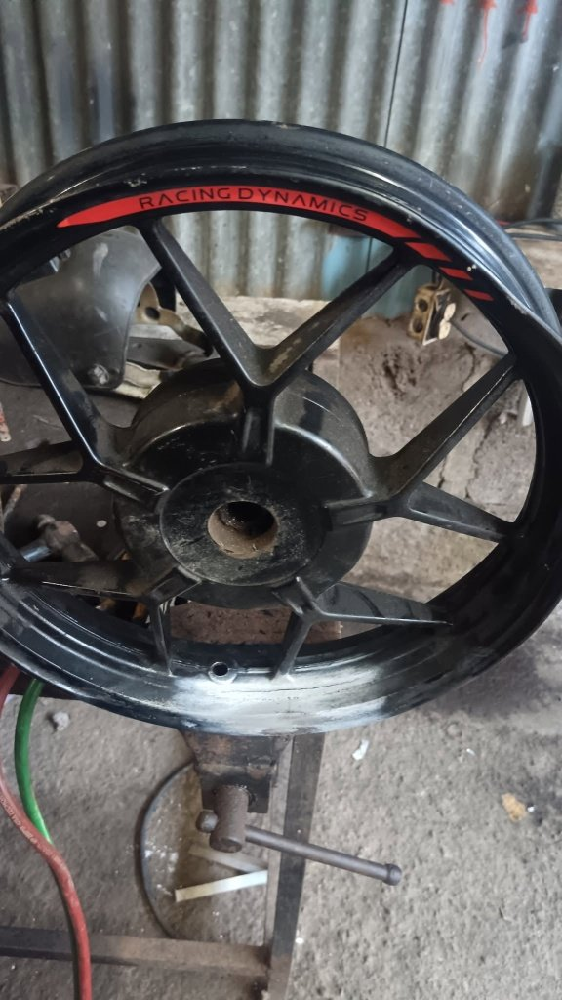

Se suelda. Se torna.
Se arregla bien.
Rectificación de motores, reparación de culatas y soldaduras especiales en aluminio, bronce y hierro colado. Trabajo de precisión, con la calificación 5.0 de nuestros clientes.
Un taller, todas las piezas que necesita su motor
Desde el torno hasta la soldadura fina, cubrimos el trabajo completo de metalurgia para motores, culatas y rines.
Rectificación de motores
Devolvemos la precisión original al bloque y a las piezas móviles del motor.
Reparación de culatas
Planificado, sellado y reparación de fisuras con control de precisión.
Soldaduras especiales
Aluminio, bronce y hierro colado, con el equipo y la técnica correcta para cada metal.
Soldadura de rines
Enderezado y soldadura de rines de moto y vehículo, listos para rodar de nuevo.
Cada pieza pasa por manos que conocen el oficio
Nada sale del taller sin revisión. Trabajamos con soplete, torno y soldadura punto por punto hasta que la pieza queda como nueva.
- Diagnóstico antes de cotizar, sin sorpresas.
- Soldadura especializada según el metal: aluminio, bronce o hierro colado.
- Piezas de moto y vehículo livianas y pesadas.

Piezas que ya volvieron a rodar y a girar



Calificación 5.0 de nuestros clientes
"Le soldaron el rin a mi moto y quedó perfecto, balanceado y sin fugas."
Cliente del taller
"Rectificaron el motor completo, quedó trabajando como nuevo."
Cliente del taller
"Buena atención y trabajo de soldadura muy prolijo en aluminio."
Cliente del taller
¿Tiene una pieza para reparar?
Cuéntenos qué necesita y le respondemos con el diagnóstico y el precio.